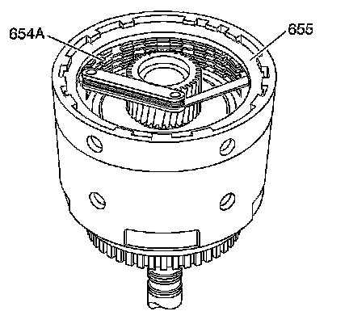

3-4 Clutch Plate Travel Check
3-4 Clutch Plate Travel Check

1. Use feeler gauges to check the 3rd and 4th clutch plate travel.
2. Check the travel between the selective backing plate (655) and the first fiber plate assembly (654A).
The 3rd and 4th clutch plate travel should be:
^ Five plate - 0.99-2.14 mm (0.038-0.084 in)
^ Six plate - 0.90-2.10 mm (0.035-0.082 in)
^ Seven plate - 1.12-2.04 mm (0.044-0.080 in)
3. Select the proper 3rd and 4th clutch selective backing plate to obtain the correct travel. Refer to Third and Fourth Clutch Backing Plate Selection.